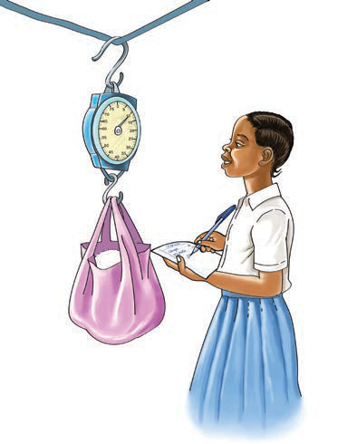

matukio hayo ni kama vile mvua kunyesha, tetemeko la ardhi na kutokea kwa radi. Aidha, sayansi husaidia kutengeneza vifaa vinavyotumika kurahisisha kazi katika maisha ya kila siku. Pia, kutatua matatizo kwa kuzingatia kanuni maalumu. Chunguza Kielelezo namba 1. Mtu anayefanya shughuli za kisayansi huitwa mwanasayansi.
(a)

Kielelezo namba 1(a) kinaonesha msichana akipima uzito wa kifurushi kwa mizani ya kuning’inia na kuandika matokeo.(b)
Kielelezo namba 1(b) kinaonesha mhudumu wa afya akimchunguza mtoto kwa kutumia stetoskopu.
Kielelezo namba 1: Kutumia vifaa vya kisayansi